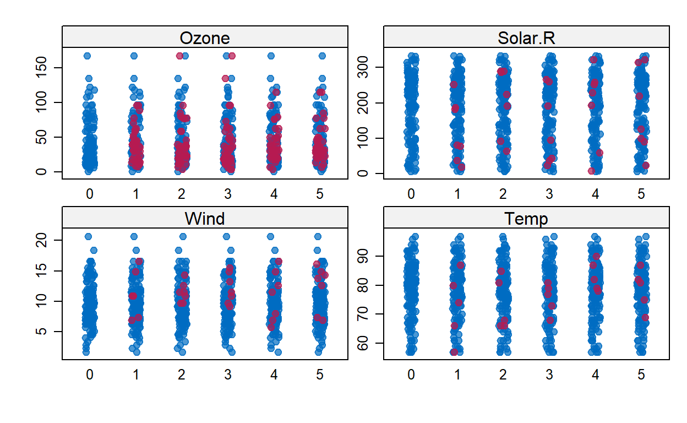

Over het pakket mice en missende waarden
MICE pakketOnlangs gaf Stef van Buuren een verhelderende introductie op het
pakket mice dat hij de laatste jaren ontwikkeld heeft en
dat een standaardpakket geworden is om missende data om te gaan. Zijn
presentatie is hier te vinden slides.
Hij verwees tijdens de presentatie naar het artikel dat hij hierover
eerder schreef (Van Buuren, and Groothuis-Oudshoorn, 2011)[hier](mice: Multivariate
Imputation by Chained Equations in R by Stef van Buuren, het boek
dat hij hierover maakte hier en ook verwees hij naar
een korte Nederlandse talige introductie hier.
Na zijn presentatie las ik via Rbloggers de korte post van Michy Allice
hier.Voor
deze blog heb ik dat artile van Allice bewerkt. Tot slot las ik ook nog
het boek van Heymans en Eekhout over dit onderwerp hier dat ook goed
is.
mice-pakketOntbrekende gegevens zijn niet zon triviaal probleem bij de analyse van een dataset. Het is meestal ook niet zo eenvoudig om er rekening mee te houden.
Als de hoeveelheid ontbrekende gegevens zeer klein is in verhouding tot de grootte van de dataset, dan kan het weglaten van de weinige data met ontbrekende kenmerken de beste strategie zijn om de analyse niet te vertekenen,. Met hety weglaten van beschikbare datapunten verdwijnt een bepaalde hoeveelheid informatie. Afhankelijk van de situatie waarmee u te maken hebt, kunt u op zoek gaan naar andere oplossingen voordat u potentieel nuttige datapunten uit uw dataset verwijdert.
Hoewel sommige snelle oplossingen zoals het vervangen door het gemiddelde in sommige gevallen goed kunnen zijn, heb je met zulke eenvoudige benaderingen gewoonlijk bias in de data. Het toepassen van gemiddelde-substitutie laat het gemiddelde onveranderd (wat wenselijk is), maar vermindert de variantie, wat onwenselijk kan zijn.
Het
micepakket in R helpt bij het imputeren van ontbrekende waarden met plausibele gegevenswaarden. Deze plausibele waarden worden getrokken uit een distributie die speciaal ontworpen is voor elk ontbrekend datapunt.
Hieronder gaan we ontbrekende waarden imputeren met behulp van de
dataset airquality (standaard beschikbaar in R). Voor dit
blog verwijder ik een aantal datapunten uit de dataset.
Ozone Solar.R Wind Temp
Min. : 1.00 Min. : 7.0 Min. : 1.700 Min. :57.00
1st Qu.: 18.00 1st Qu.:115.8 1st Qu.: 7.400 1st Qu.:73.00
Median : 31.50 Median :205.0 Median : 9.700 Median :79.00
Mean : 42.13 Mean :185.9 Mean : 9.806 Mean :78.28
3rd Qu.: 63.25 3rd Qu.:258.8 3rd Qu.:11.500 3rd Qu.:85.00
Max. :168.00 Max. :334.0 Max. :20.700 Max. :97.00
NA's :37 NA's :7 NA's :7 NA's :5
Month Day
Min. :5.000 Min. : 1.0
1st Qu.:6.000 1st Qu.: 8.0
Median :7.000 Median :16.0
Mean :6.993 Mean :15.8
3rd Qu.:8.000 3rd Qu.:23.0
Max. :9.000 Max. :31.0
Wat categorische variabelen betreft, is het vervangen van
categorische variabelen gewoonlijk niet aan te bevelen. Het is wel
gebruikelijk om ontbrekende categorische variabelen te vervangen door de
modus van de waargenomen variabelen, maar het is de vraag of dat een
goede keuze is. Ook al ontbreken er in dit geval geen datapunten van de
categorische variabelen (Month, Day), we verwijderen ze uit onze dataset
(we kunnen ze later weer toevoegen als dat nodig is) en bekijken de
gegevens met summary().
Ozone Solar.R Wind Temp
Min. : 1.00 Min. : 7.0 Min. : 1.700 Min. :57.00
1st Qu.: 18.00 1st Qu.:115.8 1st Qu.: 7.400 1st Qu.:73.00
Median : 31.50 Median :205.0 Median : 9.700 Median :79.00
Mean : 42.13 Mean :185.9 Mean : 9.806 Mean :78.28
3rd Qu.: 63.25 3rd Qu.:258.8 3rd Qu.:11.500 3rd Qu.:85.00
Max. :168.00 Max. :334.0 Max. :20.700 Max. :97.00
NA's :37 NA's :7 NA's :7 NA's :5 Ozon is blijkbaar de variabele met de meeste ontbrekende datapunten. Hieronder gaan we dieper in op de ontbrekende datapatronen.
Er zijn twee soorten ontbrekende gegevens:
Ervan uitgaande dat de gegevens MCAR zijn, kan een teveel aan ontbrekende gegevens ook een probleem zijn. Gewoonlijk is een veilige maximumdrempel 5% van het totaal voor grote datasets. Als de ontbrekende gegevens voor een bepaald kenmerk of een bepaalde steekproef meer dan 5% bedragen, moet u dat kenmerk of die steekproef waarschijnlijk weglaten. Daarom controleren we op kenmerken (kolommen) en steekproeven (rijen) waar meer dan 5% van de data ontbreekt met een eenvoudige functie
Ozone Solar.R Wind Temp
24.183007 4.575163 4.575163 3.267974 apply(data,1,pMiss)
[1] 25 25 25 50 100 50 25 25 25 50 25 0 0 0 0 0
[17] 0 0 0 0 0 0 0 0 25 25 50 0 0 0 0 25
[33] 25 25 25 25 25 0 25 0 0 25 25 0 25 25 0 0
[49] 0 0 0 25 25 25 25 25 25 25 25 25 25 0 0 0
[65] 25 0 0 0 0 0 0 25 0 0 25 0 0 0 0 0
[81] 0 0 25 25 0 0 0 0 0 0 0 0 0 0 0 25
[97] 25 25 0 0 0 25 25 0 0 0 25 0 0 0 0 0
[113] 0 0 25 0 0 0 25 0 0 0 0 0 0 0 0 0
[129] 0 0 0 0 0 0 0 0 0 0 0 0 0 0 0 0
[145] 0 0 0 0 0 25 0 0 0We zien dat Ozon bijna 25% van de datapunten mist, dus we kunnen overwegen om het uit de analyse te laten of meer metingen te verzamelen. De andere variabelen blijven onder de drempel van 5%, zodat we ze kunnen behouden. Wat de data betreft, leidt het ontbreken van slechts n kenmerk tot 25% ontbrekende gegevens per dataset.
Het mice pakket biedt een mooie functie
md.pattern() om een beter inzicht te krijgen in het patroon
van ontbrekende gegevens.
md.pattern(data)
Temp Solar.R Wind Ozone
104 1 1 1 1 0
34 1 1 1 0 1
3 1 1 0 1 1
1 1 1 0 0 2
4 1 0 1 1 1
1 1 0 1 0 2
1 1 0 0 1 2
3 0 1 1 1 1
1 0 1 0 1 2
1 0 0 0 0 4
5 7 7 37 56De output vertelt ons dat 104 gegevens compleet zijn, 34 data missen alleen de Ozonmeting, 3 data missen alleen de Solar.R waarde enzovoort.
Een wellicht meer behulpzame visuele weergave kan worden verkregen met behulp van het VIM pakket als volgt
library(VIM)
aggr_plot <- aggr(data, col=c('navyblue','red'), numbers=TRUE, sortVars=TRUE, labels=names(data), cex.axis=.7, gap=3, ylab=c("Histogram van missende data","Patroon"))
Variables sorted by number of missings:
Variable Count
Ozone 0.24183007
Solar.R 0.04575163
Wind 0.04575163
Temp 0.03267974Uit de grafiek kunnen we opmaken dat bij bijna 70% van de data geen informatie ontbreekt, bij 22% ontbreekt de ozonwaarde en bij de overige variabelen ontbreekt zon 5%. Door deze aanpak ziet de situatie er naar mijn mening een stuk duidelijker uit.
Een andere (hopelijk) behulpzame visuele benadering is een speciale boxplot
marginplot(data[c(1,2)])
Uiteraard zijn we hier beperkt tot het plotten van slechts 2 variabelen tegelijk, maar desalniettemin kunnen we hier een aantal interessante inzichten uit verkrijgen. De rode boxplot links toont de verdeling van Solar.R waarbij Ozone ontbreekt, terwijl de blauwe boxplot de verdeling van de resterende datapunten toont. Hetzelfde geldt voor de boxplots van Ozone onderaan de grafiek. Als onze aanname van MCAR-gegevens juist is, dan verwachten we dat de rode en blauwe boxplots sterk op elkaar lijken.
De mice() functie zorgt voor het imputatieprocess
tempData <- mice(data,m=5,maxit=50,meth='pmm',seed=500)
iter imp variable
1 1 Ozone Solar.R Wind Temp
1 2 Ozone Solar.R Wind Temp
1 3 Ozone Solar.R Wind Temp
1 4 Ozone Solar.R Wind Temp
1 5 Ozone Solar.R Wind Temp
2 1 Ozone Solar.R Wind Temp
2 2 Ozone Solar.R Wind Temp
2 3 Ozone Solar.R Wind Temp
2 4 Ozone Solar.R Wind Temp
2 5 Ozone Solar.R Wind Temp
3 1 Ozone Solar.R Wind Temp
3 2 Ozone Solar.R Wind Temp
3 3 Ozone Solar.R Wind Temp
3 4 Ozone Solar.R Wind Temp
3 5 Ozone Solar.R Wind Temp
4 1 Ozone Solar.R Wind Temp
4 2 Ozone Solar.R Wind Temp
4 3 Ozone Solar.R Wind Temp
4 4 Ozone Solar.R Wind Temp
4 5 Ozone Solar.R Wind Temp
5 1 Ozone Solar.R Wind Temp
5 2 Ozone Solar.R Wind Temp
5 3 Ozone Solar.R Wind Temp
5 4 Ozone Solar.R Wind Temp
5 5 Ozone Solar.R Wind Temp
6 1 Ozone Solar.R Wind Temp
6 2 Ozone Solar.R Wind Temp
6 3 Ozone Solar.R Wind Temp
6 4 Ozone Solar.R Wind Temp
6 5 Ozone Solar.R Wind Temp
7 1 Ozone Solar.R Wind Temp
7 2 Ozone Solar.R Wind Temp
7 3 Ozone Solar.R Wind Temp
7 4 Ozone Solar.R Wind Temp
7 5 Ozone Solar.R Wind Temp
8 1 Ozone Solar.R Wind Temp
8 2 Ozone Solar.R Wind Temp
8 3 Ozone Solar.R Wind Temp
8 4 Ozone Solar.R Wind Temp
8 5 Ozone Solar.R Wind Temp
9 1 Ozone Solar.R Wind Temp
9 2 Ozone Solar.R Wind Temp
9 3 Ozone Solar.R Wind Temp
9 4 Ozone Solar.R Wind Temp
9 5 Ozone Solar.R Wind Temp
10 1 Ozone Solar.R Wind Temp
10 2 Ozone Solar.R Wind Temp
10 3 Ozone Solar.R Wind Temp
10 4 Ozone Solar.R Wind Temp
10 5 Ozone Solar.R Wind Temp
11 1 Ozone Solar.R Wind Temp
11 2 Ozone Solar.R Wind Temp
11 3 Ozone Solar.R Wind Temp
11 4 Ozone Solar.R Wind Temp
11 5 Ozone Solar.R Wind Temp
12 1 Ozone Solar.R Wind Temp
12 2 Ozone Solar.R Wind Temp
12 3 Ozone Solar.R Wind Temp
12 4 Ozone Solar.R Wind Temp
12 5 Ozone Solar.R Wind Temp
13 1 Ozone Solar.R Wind Temp
13 2 Ozone Solar.R Wind Temp
13 3 Ozone Solar.R Wind Temp
13 4 Ozone Solar.R Wind Temp
13 5 Ozone Solar.R Wind Temp
14 1 Ozone Solar.R Wind Temp
14 2 Ozone Solar.R Wind Temp
14 3 Ozone Solar.R Wind Temp
14 4 Ozone Solar.R Wind Temp
14 5 Ozone Solar.R Wind Temp
15 1 Ozone Solar.R Wind Temp
15 2 Ozone Solar.R Wind Temp
15 3 Ozone Solar.R Wind Temp
15 4 Ozone Solar.R Wind Temp
15 5 Ozone Solar.R Wind Temp
16 1 Ozone Solar.R Wind Temp
16 2 Ozone Solar.R Wind Temp
16 3 Ozone Solar.R Wind Temp
16 4 Ozone Solar.R Wind Temp
16 5 Ozone Solar.R Wind Temp
17 1 Ozone Solar.R Wind Temp
17 2 Ozone Solar.R Wind Temp
17 3 Ozone Solar.R Wind Temp
17 4 Ozone Solar.R Wind Temp
17 5 Ozone Solar.R Wind Temp
18 1 Ozone Solar.R Wind Temp
18 2 Ozone Solar.R Wind Temp
18 3 Ozone Solar.R Wind Temp
18 4 Ozone Solar.R Wind Temp
18 5 Ozone Solar.R Wind Temp
19 1 Ozone Solar.R Wind Temp
19 2 Ozone Solar.R Wind Temp
19 3 Ozone Solar.R Wind Temp
19 4 Ozone Solar.R Wind Temp
19 5 Ozone Solar.R Wind Temp
20 1 Ozone Solar.R Wind Temp
20 2 Ozone Solar.R Wind Temp
20 3 Ozone Solar.R Wind Temp
20 4 Ozone Solar.R Wind Temp
20 5 Ozone Solar.R Wind Temp
21 1 Ozone Solar.R Wind Temp
21 2 Ozone Solar.R Wind Temp
21 3 Ozone Solar.R Wind Temp
21 4 Ozone Solar.R Wind Temp
21 5 Ozone Solar.R Wind Temp
22 1 Ozone Solar.R Wind Temp
22 2 Ozone Solar.R Wind Temp
22 3 Ozone Solar.R Wind Temp
22 4 Ozone Solar.R Wind Temp
22 5 Ozone Solar.R Wind Temp
23 1 Ozone Solar.R Wind Temp
23 2 Ozone Solar.R Wind Temp
23 3 Ozone Solar.R Wind Temp
23 4 Ozone Solar.R Wind Temp
23 5 Ozone Solar.R Wind Temp
24 1 Ozone Solar.R Wind Temp
24 2 Ozone Solar.R Wind Temp
24 3 Ozone Solar.R Wind Temp
24 4 Ozone Solar.R Wind Temp
24 5 Ozone Solar.R Wind Temp
25 1 Ozone Solar.R Wind Temp
25 2 Ozone Solar.R Wind Temp
25 3 Ozone Solar.R Wind Temp
25 4 Ozone Solar.R Wind Temp
25 5 Ozone Solar.R Wind Temp
26 1 Ozone Solar.R Wind Temp
26 2 Ozone Solar.R Wind Temp
26 3 Ozone Solar.R Wind Temp
26 4 Ozone Solar.R Wind Temp
26 5 Ozone Solar.R Wind Temp
27 1 Ozone Solar.R Wind Temp
27 2 Ozone Solar.R Wind Temp
27 3 Ozone Solar.R Wind Temp
27 4 Ozone Solar.R Wind Temp
27 5 Ozone Solar.R Wind Temp
28 1 Ozone Solar.R Wind Temp
28 2 Ozone Solar.R Wind Temp
28 3 Ozone Solar.R Wind Temp
28 4 Ozone Solar.R Wind Temp
28 5 Ozone Solar.R Wind Temp
29 1 Ozone Solar.R Wind Temp
29 2 Ozone Solar.R Wind Temp
29 3 Ozone Solar.R Wind Temp
29 4 Ozone Solar.R Wind Temp
29 5 Ozone Solar.R Wind Temp
30 1 Ozone Solar.R Wind Temp
30 2 Ozone Solar.R Wind Temp
30 3 Ozone Solar.R Wind Temp
30 4 Ozone Solar.R Wind Temp
30 5 Ozone Solar.R Wind Temp
31 1 Ozone Solar.R Wind Temp
31 2 Ozone Solar.R Wind Temp
31 3 Ozone Solar.R Wind Temp
31 4 Ozone Solar.R Wind Temp
31 5 Ozone Solar.R Wind Temp
32 1 Ozone Solar.R Wind Temp
32 2 Ozone Solar.R Wind Temp
32 3 Ozone Solar.R Wind Temp
32 4 Ozone Solar.R Wind Temp
32 5 Ozone Solar.R Wind Temp
33 1 Ozone Solar.R Wind Temp
33 2 Ozone Solar.R Wind Temp
33 3 Ozone Solar.R Wind Temp
33 4 Ozone Solar.R Wind Temp
33 5 Ozone Solar.R Wind Temp
34 1 Ozone Solar.R Wind Temp
34 2 Ozone Solar.R Wind Temp
34 3 Ozone Solar.R Wind Temp
34 4 Ozone Solar.R Wind Temp
34 5 Ozone Solar.R Wind Temp
35 1 Ozone Solar.R Wind Temp
35 2 Ozone Solar.R Wind Temp
35 3 Ozone Solar.R Wind Temp
35 4 Ozone Solar.R Wind Temp
35 5 Ozone Solar.R Wind Temp
36 1 Ozone Solar.R Wind Temp
36 2 Ozone Solar.R Wind Temp
36 3 Ozone Solar.R Wind Temp
36 4 Ozone Solar.R Wind Temp
36 5 Ozone Solar.R Wind Temp
37 1 Ozone Solar.R Wind Temp
37 2 Ozone Solar.R Wind Temp
37 3 Ozone Solar.R Wind Temp
37 4 Ozone Solar.R Wind Temp
37 5 Ozone Solar.R Wind Temp
38 1 Ozone Solar.R Wind Temp
38 2 Ozone Solar.R Wind Temp
38 3 Ozone Solar.R Wind Temp
38 4 Ozone Solar.R Wind Temp
38 5 Ozone Solar.R Wind Temp
39 1 Ozone Solar.R Wind Temp
39 2 Ozone Solar.R Wind Temp
39 3 Ozone Solar.R Wind Temp
39 4 Ozone Solar.R Wind Temp
39 5 Ozone Solar.R Wind Temp
40 1 Ozone Solar.R Wind Temp
40 2 Ozone Solar.R Wind Temp
40 3 Ozone Solar.R Wind Temp
40 4 Ozone Solar.R Wind Temp
40 5 Ozone Solar.R Wind Temp
41 1 Ozone Solar.R Wind Temp
41 2 Ozone Solar.R Wind Temp
41 3 Ozone Solar.R Wind Temp
41 4 Ozone Solar.R Wind Temp
41 5 Ozone Solar.R Wind Temp
42 1 Ozone Solar.R Wind Temp
42 2 Ozone Solar.R Wind Temp
42 3 Ozone Solar.R Wind Temp
42 4 Ozone Solar.R Wind Temp
42 5 Ozone Solar.R Wind Temp
43 1 Ozone Solar.R Wind Temp
43 2 Ozone Solar.R Wind Temp
43 3 Ozone Solar.R Wind Temp
43 4 Ozone Solar.R Wind Temp
43 5 Ozone Solar.R Wind Temp
44 1 Ozone Solar.R Wind Temp
44 2 Ozone Solar.R Wind Temp
44 3 Ozone Solar.R Wind Temp
44 4 Ozone Solar.R Wind Temp
44 5 Ozone Solar.R Wind Temp
45 1 Ozone Solar.R Wind Temp
45 2 Ozone Solar.R Wind Temp
45 3 Ozone Solar.R Wind Temp
45 4 Ozone Solar.R Wind Temp
45 5 Ozone Solar.R Wind Temp
46 1 Ozone Solar.R Wind Temp
46 2 Ozone Solar.R Wind Temp
46 3 Ozone Solar.R Wind Temp
46 4 Ozone Solar.R Wind Temp
46 5 Ozone Solar.R Wind Temp
47 1 Ozone Solar.R Wind Temp
47 2 Ozone Solar.R Wind Temp
47 3 Ozone Solar.R Wind Temp
47 4 Ozone Solar.R Wind Temp
47 5 Ozone Solar.R Wind Temp
48 1 Ozone Solar.R Wind Temp
48 2 Ozone Solar.R Wind Temp
48 3 Ozone Solar.R Wind Temp
48 4 Ozone Solar.R Wind Temp
48 5 Ozone Solar.R Wind Temp
49 1 Ozone Solar.R Wind Temp
49 2 Ozone Solar.R Wind Temp
49 3 Ozone Solar.R Wind Temp
49 4 Ozone Solar.R Wind Temp
49 5 Ozone Solar.R Wind Temp
50 1 Ozone Solar.R Wind Temp
50 2 Ozone Solar.R Wind Temp
50 3 Ozone Solar.R Wind Temp
50 4 Ozone Solar.R Wind Temp
50 5 Ozone Solar.R Wind Tempsummary(tempData)
Class: mids
Number of multiple imputations: 5
Imputation methods:
Ozone Solar.R Wind Temp
"pmm" "pmm" "pmm" "pmm"
PredictorMatrix:
Ozone Solar.R Wind Temp
Ozone 0 1 1 1
Solar.R 1 0 1 1
Wind 1 1 0 1
Temp 1 1 1 0Een paar opmerkingen over de parameters:
m=5 verwijst naar het aantal gemputeerde datasets.
Vijf is de standaard waarde.meth='pmm' verwijst naar de imputatie methode. In dit
geval gebruiken we pmm (predictive mean matching) als imputatiemethode.
Er kunnen ook andere imputatiemethoden worden gebruikt, type
methods(mice) voor een lijst van de beschikbare
imputatiemethoden.Als u de gemputeerde gegevens wilt controleren, bijvoorbeeld voor de variabele Ozon, moet u de volgende regel code invoeren
tempData$imp$Ozone
1 2 3 4 5
5 13 19 12 115 63
10 30 12 13 21 7
25 8 28 6 18 28
26 9 32 4 18 37
27 37 21 4 32 32
32 40 39 35 32 47
33 44 28 36 52 20
34 20 23 37 37 19
35 32 28 16 32 35
36 89 80 48 49 115
37 18 7 16 30 22
39 96 77 135 76 85
42 50 168 64 50 41
43 96 78 96 96 78
45 63 20 18 24 31
46 71 37 20 20 28
52 20 35 37 63 63
53 16 78 73 48 115
54 59 35 46 44 23
55 16 39 28 40 49
56 24 36 52 21 44
57 36 20 20 18 23
58 11 11 24 7 23
59 44 13 23 23 27
60 23 4 19 4 32
61 44 16 46 37 35
65 30 23 65 30 30
72 45 37 63 63 44
75 39 46 32 39 28
83 37 40 59 32 35
84 40 59 28 28 35
102 61 85 96 79 78
103 31 59 20 31 36
107 32 24 11 21 21
115 52 16 11 14 13
119 78 96 168 76 50
150 14 12 13 23 11De uitvoer toont de gemputeerde data voor elke observatie (eerste
kolom links) binnen elke gemputeerde dataset (eerste rij bovenaan). Als
u de gebruikte imputatiemethode voor elke variabele wilt controleren,
kunt u dat met mice heel eenvoudig doen
tempData$meth
Ozone Solar.R Wind Temp
"pmm" "pmm" "pmm" "pmm" Nu kunnen we de voltooide dataset terugkrijgen met de
complete()functie. Het is bijna gewoon Engels:
completedData <- complete(tempData,1)
De ontbrekende waarden zijn vervangen door de gemputeerde waarden in
de eerste van de vijf datasets. Als je een andere wilt gebruiken,
verander dan de tweede parameter in de complete()
functie.
Laten we de verdelingen van de originele en gemputeerde data vergelijken met behulp van een aantal handige plots. Allereerst kunnen we een scatterplot gebruiken en Ozon uitzetten tegen alle andere variabelen.
Hier is dat het geval:
xyplot(tempData,Ozone ~ Wind+Temp+Solar.R,pch=18,cex=1)
Wat wij willen zien is dat de vorm van de magenta punten (gemputeerd) overeenkomt met de vorm van de blauwe punten (waargenomen). De overeenkomstige vorm zegt ons dat de gemputeerde waarden inderdaad plausibele waarden zijn. Een andere nuttige grafiek is de densitygrafiek:
densityplot(tempData)
De dichtheid van de gemputeerde gegevens voor elke gemputeerde dataset wordt getoond in magenta, terwijl de dichtheid van de waargenomen gegevens in blauw wordt getoond. Nogmaals, onder onze eerdere aannames verwachten we dat de verdelingen vergelijkbaar zijn.
Een andere nuttige visuele kijk op de verdelingen kan worden
verkregen met de stripplot() functie die de verdelingen van
de variabelen als afzonderlijke punten toont
stripplot(tempData, pch = 20, cex = 1.2)

Veronderstel dat de volgende stap in onze analyse erin bestaat een
lineair model op de gegevens toe te passen. Dan kun je je afvragen welke
gemputeerde dataset je moet kiezen. Het mice pakket maakt
het weer heel gemakkelijk om een model te passen op elk van de
gemputeerde datasets en dan deze resultaten samen te voegen
term estimate std.error statistic df
1 (Intercept) 72.70719792 2.761360433 26.330209 117.27936
2 Ozone 0.15924872 0.025914423 6.145177 49.30693
3 Solar.R 0.01252384 0.008678358 1.443112 18.19046
4 Wind -0.34547006 0.207866970 -1.661977 123.65905
p.value
1 0.000000e+00
2 1.367056e-07
3 1.659893e-01
4 9.905045e-02De variabele modelFit1 bevat de resultaten van de
aanpassing die is uitgevoerd over de gemputeerde datasets, terwijl de
pool() functie ze allemaal samenvoegt. Blijkbaar is alleen
de Ozon variabele statistisch significant.
Vergeet niet dat we de mice-functie hebben
genitialiseerd met een specifieke seed-instelling. Daarom zijn de
resultaten enigszins afhankelijk van onze initile keuze. Om dit effect
te verminderen, kunnen we een hoger aantal datasets toerekenen, door de
standaard m=5 parameter in de mice() functie
als volgt te wijzigen
tempData2 <- mice(data,m=50,seed=245435)
iter imp variable
1 1 Ozone Solar.R Wind Temp
1 2 Ozone Solar.R Wind Temp
1 3 Ozone Solar.R Wind Temp
1 4 Ozone Solar.R Wind Temp
1 5 Ozone Solar.R Wind Temp
1 6 Ozone Solar.R Wind Temp
1 7 Ozone Solar.R Wind Temp
1 8 Ozone Solar.R Wind Temp
1 9 Ozone Solar.R Wind Temp
1 10 Ozone Solar.R Wind Temp
1 11 Ozone Solar.R Wind Temp
1 12 Ozone Solar.R Wind Temp
1 13 Ozone Solar.R Wind Temp
1 14 Ozone Solar.R Wind Temp
1 15 Ozone Solar.R Wind Temp
1 16 Ozone Solar.R Wind Temp
1 17 Ozone Solar.R Wind Temp
1 18 Ozone Solar.R Wind Temp
1 19 Ozone Solar.R Wind Temp
1 20 Ozone Solar.R Wind Temp
1 21 Ozone Solar.R Wind Temp
1 22 Ozone Solar.R Wind Temp
1 23 Ozone Solar.R Wind Temp
1 24 Ozone Solar.R Wind Temp
1 25 Ozone Solar.R Wind Temp
1 26 Ozone Solar.R Wind Temp
1 27 Ozone Solar.R Wind Temp
1 28 Ozone Solar.R Wind Temp
1 29 Ozone Solar.R Wind Temp
1 30 Ozone Solar.R Wind Temp
1 31 Ozone Solar.R Wind Temp
1 32 Ozone Solar.R Wind Temp
1 33 Ozone Solar.R Wind Temp
1 34 Ozone Solar.R Wind Temp
1 35 Ozone Solar.R Wind Temp
1 36 Ozone Solar.R Wind Temp
1 37 Ozone Solar.R Wind Temp
1 38 Ozone Solar.R Wind Temp
1 39 Ozone Solar.R Wind Temp
1 40 Ozone Solar.R Wind Temp
1 41 Ozone Solar.R Wind Temp
1 42 Ozone Solar.R Wind Temp
1 43 Ozone Solar.R Wind Temp
1 44 Ozone Solar.R Wind Temp
1 45 Ozone Solar.R Wind Temp
1 46 Ozone Solar.R Wind Temp
1 47 Ozone Solar.R Wind Temp
1 48 Ozone Solar.R Wind Temp
1 49 Ozone Solar.R Wind Temp
1 50 Ozone Solar.R Wind Temp
2 1 Ozone Solar.R Wind Temp
2 2 Ozone Solar.R Wind Temp
2 3 Ozone Solar.R Wind Temp
2 4 Ozone Solar.R Wind Temp
2 5 Ozone Solar.R Wind Temp
2 6 Ozone Solar.R Wind Temp
2 7 Ozone Solar.R Wind Temp
2 8 Ozone Solar.R Wind Temp
2 9 Ozone Solar.R Wind Temp
2 10 Ozone Solar.R Wind Temp
2 11 Ozone Solar.R Wind Temp
2 12 Ozone Solar.R Wind Temp
2 13 Ozone Solar.R Wind Temp
2 14 Ozone Solar.R Wind Temp
2 15 Ozone Solar.R Wind Temp
2 16 Ozone Solar.R Wind Temp
2 17 Ozone Solar.R Wind Temp
2 18 Ozone Solar.R Wind Temp
2 19 Ozone Solar.R Wind Temp
2 20 Ozone Solar.R Wind Temp
2 21 Ozone Solar.R Wind Temp
2 22 Ozone Solar.R Wind Temp
2 23 Ozone Solar.R Wind Temp
2 24 Ozone Solar.R Wind Temp
2 25 Ozone Solar.R Wind Temp
2 26 Ozone Solar.R Wind Temp
2 27 Ozone Solar.R Wind Temp
2 28 Ozone Solar.R Wind Temp
2 29 Ozone Solar.R Wind Temp
2 30 Ozone Solar.R Wind Temp
2 31 Ozone Solar.R Wind Temp
2 32 Ozone Solar.R Wind Temp
2 33 Ozone Solar.R Wind Temp
2 34 Ozone Solar.R Wind Temp
2 35 Ozone Solar.R Wind Temp
2 36 Ozone Solar.R Wind Temp
2 37 Ozone Solar.R Wind Temp
2 38 Ozone Solar.R Wind Temp
2 39 Ozone Solar.R Wind Temp
2 40 Ozone Solar.R Wind Temp
2 41 Ozone Solar.R Wind Temp
2 42 Ozone Solar.R Wind Temp
2 43 Ozone Solar.R Wind Temp
2 44 Ozone Solar.R Wind Temp
2 45 Ozone Solar.R Wind Temp
2 46 Ozone Solar.R Wind Temp
2 47 Ozone Solar.R Wind Temp
2 48 Ozone Solar.R Wind Temp
2 49 Ozone Solar.R Wind Temp
2 50 Ozone Solar.R Wind Temp
3 1 Ozone Solar.R Wind Temp
3 2 Ozone Solar.R Wind Temp
3 3 Ozone Solar.R Wind Temp
3 4 Ozone Solar.R Wind Temp
3 5 Ozone Solar.R Wind Temp
3 6 Ozone Solar.R Wind Temp
3 7 Ozone Solar.R Wind Temp
3 8 Ozone Solar.R Wind Temp
3 9 Ozone Solar.R Wind Temp
3 10 Ozone Solar.R Wind Temp
3 11 Ozone Solar.R Wind Temp
3 12 Ozone Solar.R Wind Temp
3 13 Ozone Solar.R Wind Temp
3 14 Ozone Solar.R Wind Temp
3 15 Ozone Solar.R Wind Temp
3 16 Ozone Solar.R Wind Temp
3 17 Ozone Solar.R Wind Temp
3 18 Ozone Solar.R Wind Temp
3 19 Ozone Solar.R Wind Temp
3 20 Ozone Solar.R Wind Temp
3 21 Ozone Solar.R Wind Temp
3 22 Ozone Solar.R Wind Temp
3 23 Ozone Solar.R Wind Temp
3 24 Ozone Solar.R Wind Temp
3 25 Ozone Solar.R Wind Temp
3 26 Ozone Solar.R Wind Temp
3 27 Ozone Solar.R Wind Temp
3 28 Ozone Solar.R Wind Temp
3 29 Ozone Solar.R Wind Temp
3 30 Ozone Solar.R Wind Temp
3 31 Ozone Solar.R Wind Temp
3 32 Ozone Solar.R Wind Temp
3 33 Ozone Solar.R Wind Temp
3 34 Ozone Solar.R Wind Temp
3 35 Ozone Solar.R Wind Temp
3 36 Ozone Solar.R Wind Temp
3 37 Ozone Solar.R Wind Temp
3 38 Ozone Solar.R Wind Temp
3 39 Ozone Solar.R Wind Temp
3 40 Ozone Solar.R Wind Temp
3 41 Ozone Solar.R Wind Temp
3 42 Ozone Solar.R Wind Temp
3 43 Ozone Solar.R Wind Temp
3 44 Ozone Solar.R Wind Temp
3 45 Ozone Solar.R Wind Temp
3 46 Ozone Solar.R Wind Temp
3 47 Ozone Solar.R Wind Temp
3 48 Ozone Solar.R Wind Temp
3 49 Ozone Solar.R Wind Temp
3 50 Ozone Solar.R Wind Temp
4 1 Ozone Solar.R Wind Temp
4 2 Ozone Solar.R Wind Temp
4 3 Ozone Solar.R Wind Temp
4 4 Ozone Solar.R Wind Temp
4 5 Ozone Solar.R Wind Temp
4 6 Ozone Solar.R Wind Temp
4 7 Ozone Solar.R Wind Temp
4 8 Ozone Solar.R Wind Temp
4 9 Ozone Solar.R Wind Temp
4 10 Ozone Solar.R Wind Temp
4 11 Ozone Solar.R Wind Temp
4 12 Ozone Solar.R Wind Temp
4 13 Ozone Solar.R Wind Temp
4 14 Ozone Solar.R Wind Temp
4 15 Ozone Solar.R Wind Temp
4 16 Ozone Solar.R Wind Temp
4 17 Ozone Solar.R Wind Temp
4 18 Ozone Solar.R Wind Temp
4 19 Ozone Solar.R Wind Temp
4 20 Ozone Solar.R Wind Temp
4 21 Ozone Solar.R Wind Temp
4 22 Ozone Solar.R Wind Temp
4 23 Ozone Solar.R Wind Temp
4 24 Ozone Solar.R Wind Temp
4 25 Ozone Solar.R Wind Temp
4 26 Ozone Solar.R Wind Temp
4 27 Ozone Solar.R Wind Temp
4 28 Ozone Solar.R Wind Temp
4 29 Ozone Solar.R Wind Temp
4 30 Ozone Solar.R Wind Temp
4 31 Ozone Solar.R Wind Temp
4 32 Ozone Solar.R Wind Temp
4 33 Ozone Solar.R Wind Temp
4 34 Ozone Solar.R Wind Temp
4 35 Ozone Solar.R Wind Temp
4 36 Ozone Solar.R Wind Temp
4 37 Ozone Solar.R Wind Temp
4 38 Ozone Solar.R Wind Temp
4 39 Ozone Solar.R Wind Temp
4 40 Ozone Solar.R Wind Temp
4 41 Ozone Solar.R Wind Temp
4 42 Ozone Solar.R Wind Temp
4 43 Ozone Solar.R Wind Temp
4 44 Ozone Solar.R Wind Temp
4 45 Ozone Solar.R Wind Temp
4 46 Ozone Solar.R Wind Temp
4 47 Ozone Solar.R Wind Temp
4 48 Ozone Solar.R Wind Temp
4 49 Ozone Solar.R Wind Temp
4 50 Ozone Solar.R Wind Temp
5 1 Ozone Solar.R Wind Temp
5 2 Ozone Solar.R Wind Temp
5 3 Ozone Solar.R Wind Temp
5 4 Ozone Solar.R Wind Temp
5 5 Ozone Solar.R Wind Temp
5 6 Ozone Solar.R Wind Temp
5 7 Ozone Solar.R Wind Temp
5 8 Ozone Solar.R Wind Temp
5 9 Ozone Solar.R Wind Temp
5 10 Ozone Solar.R Wind Temp
5 11 Ozone Solar.R Wind Temp
5 12 Ozone Solar.R Wind Temp
5 13 Ozone Solar.R Wind Temp
5 14 Ozone Solar.R Wind Temp
5 15 Ozone Solar.R Wind Temp
5 16 Ozone Solar.R Wind Temp
5 17 Ozone Solar.R Wind Temp
5 18 Ozone Solar.R Wind Temp
5 19 Ozone Solar.R Wind Temp
5 20 Ozone Solar.R Wind Temp
5 21 Ozone Solar.R Wind Temp
5 22 Ozone Solar.R Wind Temp
5 23 Ozone Solar.R Wind Temp
5 24 Ozone Solar.R Wind Temp
5 25 Ozone Solar.R Wind Temp
5 26 Ozone Solar.R Wind Temp
5 27 Ozone Solar.R Wind Temp
5 28 Ozone Solar.R Wind Temp
5 29 Ozone Solar.R Wind Temp
5 30 Ozone Solar.R Wind Temp
5 31 Ozone Solar.R Wind Temp
5 32 Ozone Solar.R Wind Temp
5 33 Ozone Solar.R Wind Temp
5 34 Ozone Solar.R Wind Temp
5 35 Ozone Solar.R Wind Temp
5 36 Ozone Solar.R Wind Temp
5 37 Ozone Solar.R Wind Temp
5 38 Ozone Solar.R Wind Temp
5 39 Ozone Solar.R Wind Temp
5 40 Ozone Solar.R Wind Temp
5 41 Ozone Solar.R Wind Temp
5 42 Ozone Solar.R Wind Temp
5 43 Ozone Solar.R Wind Temp
5 44 Ozone Solar.R Wind Temp
5 45 Ozone Solar.R Wind Temp
5 46 Ozone Solar.R Wind Temp
5 47 Ozone Solar.R Wind Temp
5 48 Ozone Solar.R Wind Temp
5 49 Ozone Solar.R Wind Temp
5 50 Ozone Solar.R Wind Temp term estimate std.error statistic df
1 (Intercept) 72.60178955 2.915916315 24.898448 105.59368
2 Ozone 0.16345639 0.026054628 6.273603 99.86352
3 Solar.R 0.01193645 0.007134344 1.673097 120.41496
4 Wind -0.33592048 0.222350762 -1.510768 107.41496
p.value
1 0.000000e+00
2 9.122568e-09
3 9.690433e-02
4 1.337838e-01Na aanpassing, krijgen we (in dit geval) min of meer dezelfde resultaten als voorheen, waarbij alleen Ozone statistische significantie vertoont.
De code kun je hier vinden.
Alice, M. (2015). Imputing missing data with R;
micepackage. R-bloggers, 4-10-2015. https://www.r-bloggers.com/2015/10/imputing-missing-data-with-r-mice-package/
Heymans, M. en Eekhout, I. (2019). Applied Missing Data Analysis With SPSS and (R)Studio. Amsterdam. https://bookdown.org/mwheymans/bookmi/
Van Buuren, S. and Groothuis-Oudshoorn, C.G.M.
(2011).mice: Multivariate Imputation by Chained Equations
in R. Journal of Statistical Software, 45(3), 167.
Van Buuren (2012). Multiple imputatie in vogelvlucht. https://stefvanbuuren.name/publications/2012%20Vogelvlucht%20-%20STAtOR.pdf
Van Buuren, S. (2018). Flexible Imputation of Missing Data. Second Edition. Chapman & Hall/CRC, Boca Raton, FL